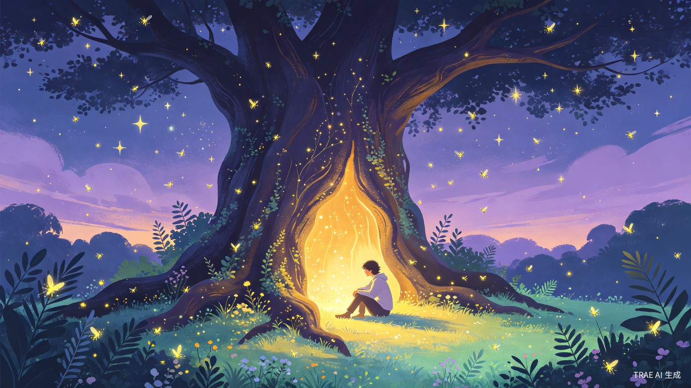
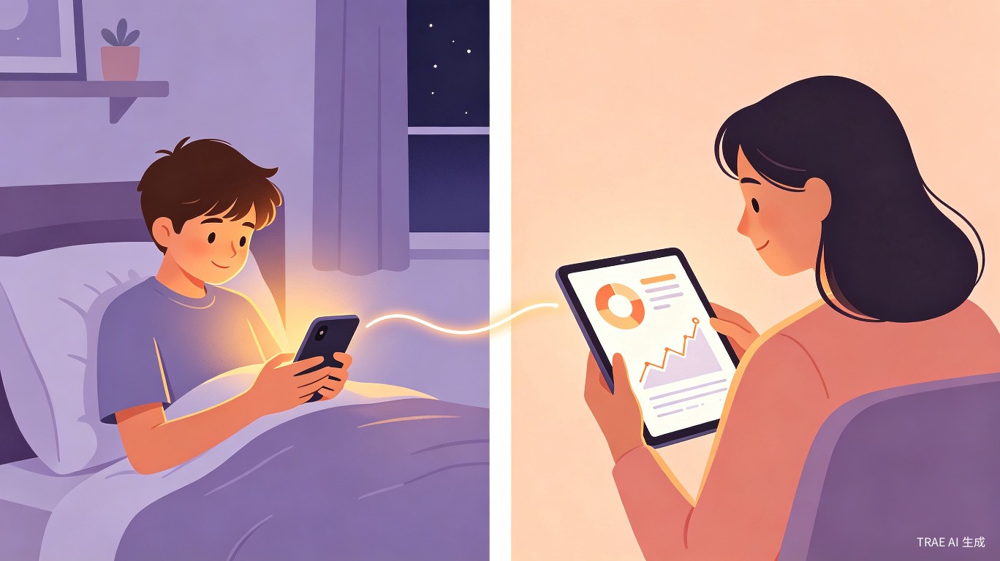
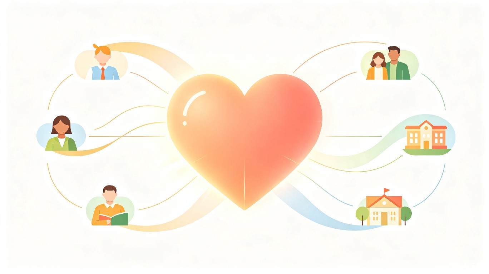

中国青少年心理健康正面临严峻挑战。据《2023年度中国国民心理健康发展报告》显示，青少年抑郁检出率约为 14.8%，焦虑检出率同样居高不下。学业压力、人际冲突、家庭关系、自我认同困惑——这些情绪困扰在青春期尤为密集，而绝大多数青少年缺乏安全、私密、无评判的倾诉渠道。
现有的心理干预资源存在三重断裂：学校心理咨询师配比严重不足（部分地区师生比超过 1:4000）；专业心理咨询费用高昂且预约周期长；家长往往无法察觉孩子的情绪变化，直到问题严重化才介入。而青少年本身对"心理咨询"存在强烈的病耻感，不愿主动求助。
在调研青少年心理健康领域时，我们发现一个关键缺口：在"完全没问题"和"需要看心理医生"之间，存在一个巨大的中间地带。绝大多数青少年并非患有临床心理疾病，但他们每天都在经历真实的情绪波动——考试焦虑、友谊冲突、家庭矛盾、自我怀疑。这些情绪如果得不到及时疏导，就可能逐渐积累成更严重的问题。
我们希望打造一个工具，填补这个中间地带。它不是心理咨询的替代品，而是在专业干预之前的一道温暖防线——用青少年喜欢的语言和交互方式，让情绪管理变得自然、有趣、无负担。
青心树洞是一款面向 12-18 岁青少年的情绪管理与正向引导 Web 应用。它以"树洞"为隐喻——一个安全、私密、温暖的倾诉空间，结合 AI 共情对话、游戏化情绪管理、情绪日记追踪和脱敏家长看板，构建一个完整的青少年情绪健康支持闭环。
文字/语音输入，AI 以共情、非说教风格回复，引导情绪表达与自我觉察
每日情绪打卡，自动生成趋势图、周报，AI 推送个性化洞察
负面情绪具象化为可爱怪兽，通过互动任务"打败"它，获得种子种在花园
根据情绪状态推荐治愈故事、音乐、冥想引导、趣味知识
仅展示情绪趋势和预警，不暴露倾诉内容，保护隐私
检测到高危意图时立即弹出温暖提示 + 心理援助热线
| 维度 | 传统心理工具 | 通用 AI 聊天 | 青心树洞 |
|---|---|---|---|
| 交互风格 | 严肃、临床化 | 工具化、无情感 | 游戏化、温暖治愈 |
| 情绪处理 | 事后干预 | 被动响应 | 主动追踪 + 具象化表达 |
| 青少年适配 | 成人化设计 | 无年龄适配 | 专为青少年设计 |
| 家长参与 | 完全隔离 | 无 | 脱敏看板 + 异常预警 |
| 隐私保护 | 依赖机构 | 数据上传云端 | 端到端加密 + 阅后即焚 |
每种负面情绪对应一种可爱的怪兽形象，通过完成互动任务来"打败"它
| 怪兽 | 对应情绪 | 外观 | 击败任务 | 奖励种子 |
|---|---|---|---|---|
| 泪滴兽 | 悲伤 / 低落 | 蓝色水滴形 | 回忆三个开心瞬间 + 听治愈歌曲 | 🌻 向日葵 |
| 火焰兽 | 愤怒 / 烦躁 | 红色火焰形 | 三次深呼吸 + 写下冷静后的想法 | 🌿 薄荷 |
| 漩涡兽 | 焦虑 / 紧张 | 紫色旋涡形 | 5分钟正念 + 列出三件能控制的事 | 🌺 薰衣草 |
| 黏液兽 | 压力 / 疲惫 | 绿色黏液形 | 创意涂鸦 + 伸展运动 | 🪴 多肉 |
| 暗影兽 | 孤独 / 无助 | 灰色暗影形 | 写一封不寄出的信 + AI陪伴对话 | 🌷 夜来香 |
flowchart TB
subgraph 用户端
A[青少年用户] --> B[情绪日记打卡]
A --> C[AI 树洞倾诉]
A --> D[情绪怪兽游戏]
A --> E[正向内容浏览]
F[家长用户] --> G[脱敏看板]
end
subgraph 核心引擎
B --> H[情绪分析引擎]
C --> H
H --> I[情绪状态数据库]
I --> J[怪兽生成器]
I --> K[内容推荐引擎]
I --> L[趋势分析器]
J --> D
K --> E
L --> G
C --> M[AI 对话引擎]
M --> N[安全检测层]
N -->|正常| M
N -->|高危| O[危机干预通道]
end
subgraph 数据层
I
P[(加密对话存储)]
Q[(脱敏趋势存储)]
end
M -.-> P
L -.-> Q
H -.-> I
style O fill:#fee2e2,stroke:#ef4444,color:#991b1b
style N fill:#fef3c7,stroke:#f59e0b,color:#92400e

晚上 11 点，小明因考试失利感到极度沮丧。打开青心树洞语音倾诉，AI 以温暖语气回应并引导呼吸放松。结束后系统自动记录情绪为"低落"，推荐一首助眠音乐。
小美每天放学后用表情选择心情。系统显示她本周三有一次焦虑波动，AI 轻轻提醒："这周三你好像有点紧张，是有什么事情吗？"周末生成情绪周报。
小杰焦虑值持续偏高，"漩涡兽"出现在情绪花园。他通过深呼吸挑战和积极想法收集削弱怪兽血量，打败后获得"薰衣草种子"种在花园。
小红的妈妈收到脱敏通知："情绪指数下降 35%，建议找机会聊聊。"看板中只有趋势曲线和通用沟通建议，没有任何倾诉内容。

青少年心理健康问题已从"隐性议题"上升为"显性社会关切"。2023年中国疾控中心数据显示，自杀已成为 15-24 岁年龄段的第三大死因。然而，在"完全没问题"和"需要临床干预"之间，存在一个巨大的中间地带——数以千万计的青少年每天都在经历真实的情绪困扰，却缺乏及时、可及、低门槛的疏导渠道。
青心树洞的社会价值在于：将心理健康的关口前移。它不是等问题严重化后才介入，而是在情绪困扰的萌芽阶段就提供一个安全出口。通过游戏化的方式降低使用门槛，消除"心理咨询"的病耻感，让情绪管理成为青少年日常生活的一部分，而非"有问题才需要"的被动行为。
同时，家长脱敏看板的设计创造性地解决了"家长关心但不知如何介入"的矛盾——在不侵犯青少年隐私的前提下，让家长获得足够的趋势信息来做出判断，在问题恶化前采取行动。这种"双向守护"的模式，在现有产品中几乎不存在。
传统心理干预的效率瓶颈在于三高：高门槛（费用、预约、病耻感）、低频次（通常一周一次）、高延迟（从发现问题到获得帮助往往需要数周）。青心树洞通过 AI 技术将这三个瓶颈同时打破。
AI 共情对话提供 7x24 小时即时响应，青少年不需要预约、不需要付费、不需要鼓起勇气走进咨询室——在深夜情绪崩溃的时刻，打开手机就能获得温暖的陪伴。情绪日记和趋势分析让用户在 数秒内完成情绪记录，系统自动完成原本需要心理咨询师数分钟才能完成的情绪评估。情绪怪兽小游戏将枯燥的情绪管理练习转化为 有趣的互动体验，大幅提升了用户的参与意愿和持续使用率。
当前市场上的心理类工具存在严重的"成人化"倾向——无论是界面设计、交互方式还是话术风格，都默认面向成年用户。青心树洞在三个层面实现了创新突破：
作为面向青少年的心理健康产品，安全是不可妥协的底线。青心树洞采用 LLM 语义理解 + 规则引擎双重检测机制，当检测到自伤、自杀等高危意图时，立即触发危机干预流程——显示温暖提示、提供全国 24 小时心理援助热线、支持紧急联系人通知。全程使用温和表述，避免对处于危机中的青少年造成二次伤害。
青心树洞高度契合当前国家政策方向。教育部《关于加强学生心理健康管理工作的通知》明确要求"切实增强青少年心理健康工作的针对性"，"建立健全心理辅导与咨询的值班、预约、转介、重点反馈等制度"。青心树洞以技术手段补充了学校心理辅导资源的不足，为政策落地提供了一个低成本、高可及的实施路径。
同时，产品聚焦的"青少年身心健康"正是本次大赛社会公益附加赛题的核心方向，具有明确的政策红利和社会关注度。
| 维度 | 青心树洞 | 心潮减压 | 壹心理 | 通用 AI 聊天 |
|---|---|---|---|---|
| 目标用户 | 12-18 岁专属 | 泛人群 | 泛人群 | 无年龄区分 |
| 交互风格 | 游戏化治愈 | 工具化 | 内容平台 | 工具化 |
| 情绪具象化 | 怪兽 + 花园 | 无 | 无 | 无 |
| 家长参与 | 脱敏看板 | 无 | 无 | 无 |
| 危机干预 | 内置检测 | 无 | 转介咨询 | 通用策略 |
| 隐私保护 | 端到端加密 | 云端 | 云端 | 云端 |
青心树洞是市场上少有的专为青少年设计的游戏化情绪管理工具。它不是心理咨询的替代品，而是在专业干预之前的一道温暖防线——用青少年喜欢的语言和交互方式，让情绪管理变得自然、有趣、无负担。